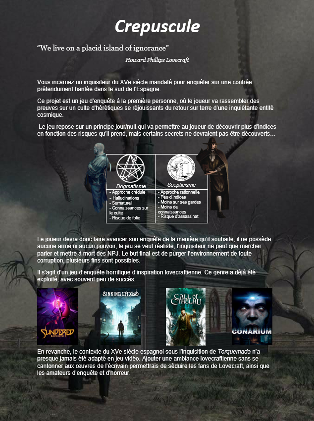
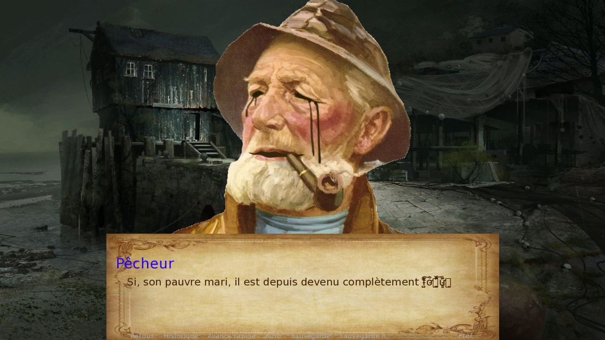

Crépuscule
Prototype of a visual novel inspired by a One Pager
After creating the One Pager of a Lovecraftian-style investigative game, I found myself leading a team, with the goal of prototyping the game. So we decided to adapt the game to make it a visual novel.
Most of the work involved getting started with ren’py and designing the dialogues available to the player, trying to stick as much as possible to the ambiance offered in the One Pager.
The prototype is a Visual Novel where the player will talk to many NPCs in order to get as much information as possible for his investigation. Moreover, certain information can cause the main character to lose sanity points. At the end of the prototype, the player is asked to express any suspicion, and he is given his sanity score.
All of this data allowed for testing with a group of players. These tests were recorded and we were able to draw several conclusions about ways to improve the prototype.
The technologie used was Ren’py, a game engine using Python scripts.


By the lack of artist in our team we had to take images found on the internet, here are the sources:
Priest useum
Doctor fineartamerica
Lighthouse keeper parkwestgallery
Fisherman pinterest
Merchant corneille-de-lyon
Husband wikimedia
{kind=link}
Back images:
Church a-besta-de-resende
Doctor's house tamrielvault
Lighthouse theboxplymouth
Fishermans's house creativeuncut
Merchant's house shadows-of-esteren
Husband's houseandrew-krivulya
UI:
Dialogue pnghut.com
Dialogue choice Renpy.org
Text font dejavu-fonts